Projects
Here is the list of projects I've worked on (or I am working on).
Software product line configuration optimization
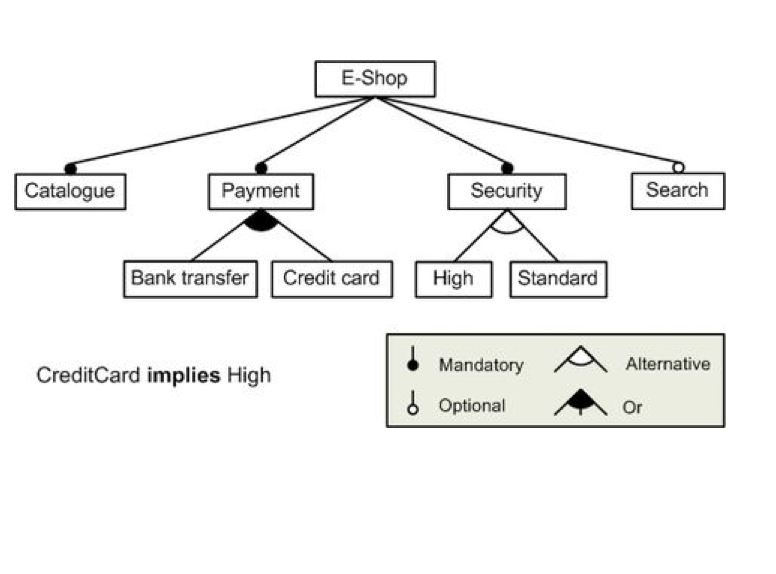
Software Product Lines (SPLs) are families of related systems whose members can be distinguished by the set of features they provide. Feature model is the tree-like structure which can expressed the relationship between the features in the SPLs. Beyond the tree-like relationship, there are many other cross-tree constraints, which make the model complex. How to find a best product line configuration has been proved as a NP-hard problem.
See an introduction to this problem here and slides here.
Track the lastest process here.
Sampling vs Mutation in Search-Based Software Engineering
 Nearly all Multi-Objective Evolutionary Algorithms (MOEAs) are plagued with slow convergence rates, and hence each requires a large number of function evaluations to approximate the Pareto Frontier (PF). This has resulted inslow adoption of MOEAs to Searh-based SE problems, where function evaluations are very expensive. This project is trying to answer the following questions:
Nearly all Multi-Objective Evolutionary Algorithms (MOEAs) are plagued with slow convergence rates, and hence each requires a large number of function evaluations to approximate the Pareto Frontier (PF). This has resulted inslow adoption of MOEAs to Searh-based SE problems, where function evaluations are very expensive. This project is trying to answer the following questions:
Large-scale assurance of confidentiality environment
When data are insufficient or non-existent for building
quality defect predictors, software engineers can use data from other organizations or projects. This is called cross project defect prediction (CPDP). Acquiring data from other sources is a non-trivial task when data owners are concerned about confidentiality[Peters et.al. LACE2]. This project extends the LACE2 model and valid it in larger scale of data. Also, it will check how much our privatization damaged the data.
Check out our tool here!
[DevOps] Continuous Integration/Delivery Pipeline [ Demo video]
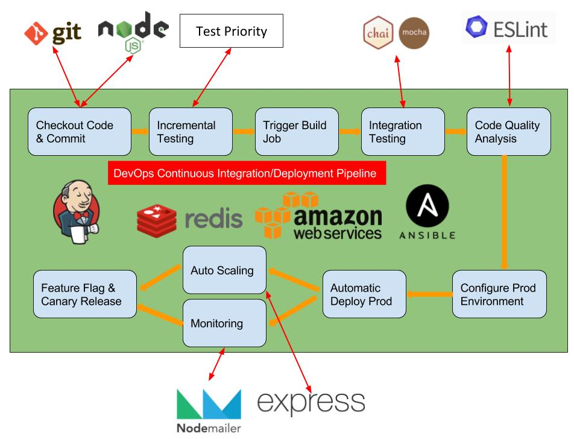
Integrated Ansible scripts, Redis, Docker and CI tools(Jenkins) to create a pipeline to build, test, analysis and deploy
newly committed code.
Basing on abstract syntax tree, created a test-suite generator to only test the diff between two commits.
Tools used in this practice.
Building Netflix Prize Prediction Model [ Code | Poster]
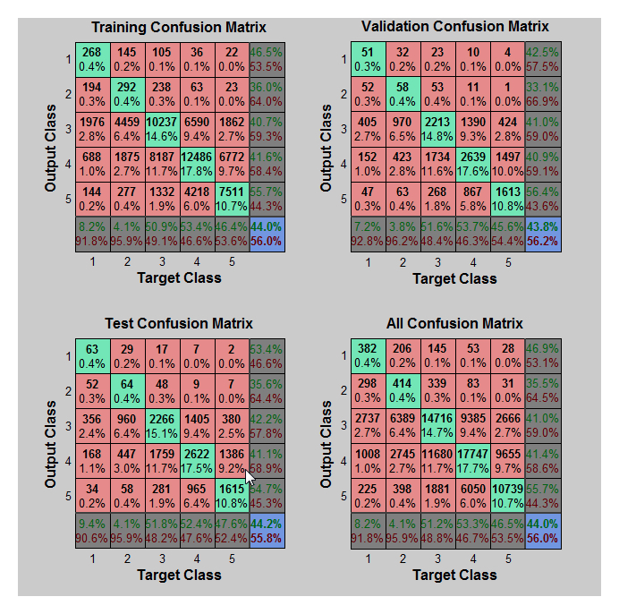
Netflix Prize competition was hold by Netflix Inc. in Oct 2006. The main goal of this competition was to predict how many score a user will rate for a movie, by learning a test set containing nearly 100 million customer rating records. In this project, we learned the data from this competition.
Given the 100 million customer rating records, we focused on the following tasks:
Software Development Process BadSmells Detection [ Report]
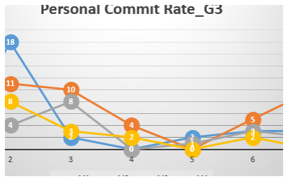 The goal of this project was to detect Bad Smells in the software development process by looking at the commits, issues, pull requests, labels and milestones in Github Repository.
Web-based Room Reserving System [ Demo | Code]
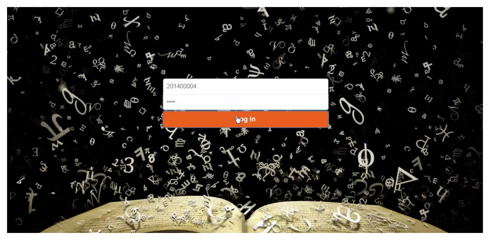 The goal for this project is to develop a web-based platform that allows students to reserve rooms and form study groups, as well as finding and joining existing groups conveniently. Through this platform, users are able to select a room according to their preferences of the day in a week, and choose a time frame for a study group, the creator of study groups can also update information that are relevant and delete the groups they created. Users could also find and join groups created by others with the search function provided.
Space Invader in OpenGL [Code]
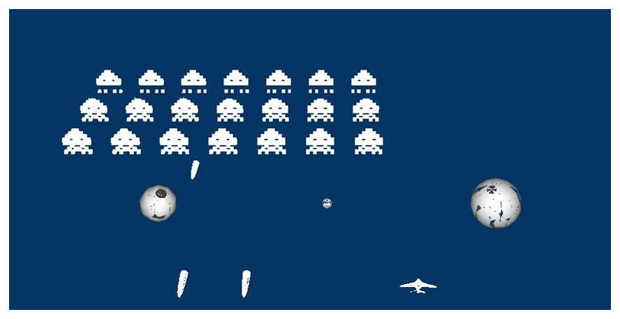 This project was to simulate the classic game "Space Invader" by OpenGL. In addition to implement to basic components, such as the field, players' cannon, cannon shooting, this project also included some additional effects. Such as the monsters exploding when shot, UFOs move across the top periodically and shoot, multiple lives, etc.
Handling and segmentation of bat CT images [ Advisor | SDU-VT Lab(twitter)]
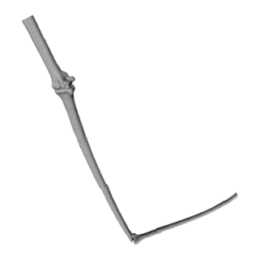
In this project, we first developed segmentation algorithm for bat wing computed tomography images, reconstracuted their 3D surface model with the help of Meshlab. Finally connected every bone for the bat hands and simplified the model by adapted LS-Mesh method.
This was my thesis for the Bachelor degree.
Equiareal parameterizations of NURBS surfaces [ Paper | Advisor]
 In this project, we studied the differential geometry of NURBS surfaces, optimized the equiareality of given NURBS surfaces using Mobius transformations. More specifically, I provided an explicit solution for Bezier/ B-spline surfaces and numerical solutions for NURBS to render the coefficients of the Mobius transformations. Finally, we gave some examples to show the performance of our algorithm.
In this project, we studied the differential geometry of NURBS surfaces, optimized the equiareality of given NURBS surfaces using Mobius transformations. More specifically, I provided an explicit solution for Bezier/ B-spline surfaces and numerical solutions for NURBS to render the coefficients of the Mobius transformations. Finally, we gave some examples to show the performance of our algorithm.
General rational bilinear transformation of NURBS surfaces [Advisor]
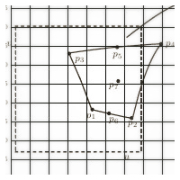 In the project, we try to improve the conformity of NURBS surfaces by an optimization algorithm using general bilinear transformations. Now we are verifying the correctness and the practicability of the algorithm. Finally we will develop some example to show the performance of the algorithm.
InnoTraffic-Intelligent navigation system
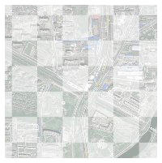 In this system, we first developed a model to express various kinds of roads, overpass or tunnel etc. in the city. Then we analyzed the real-time data collected from the system by the cellular automation model. In addition, we also developed an android app based on this system. The app won the Second Prize in International Contest of Applications in Network of Things (China) 2013.
Music information retrieval system via humming [Slides(in Chinese)]
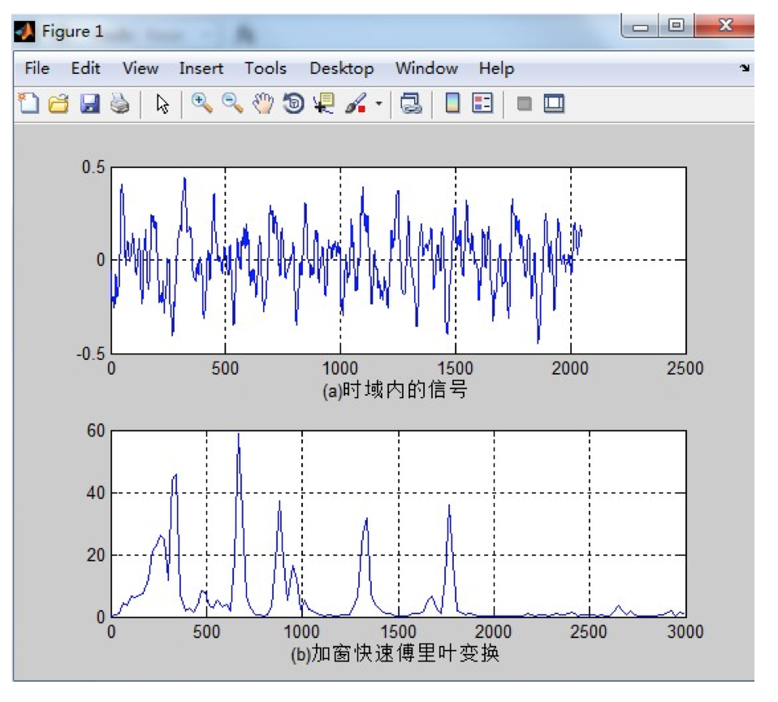 In this interesting project, we tried to develop a music information retrieval system. We developed a model to “describe” the characteristic of the song. When the humming sound collected by an android app, we calculated the main characteristic of the sound and matched it from our database.
An improved k-means clustering algorithm and its application
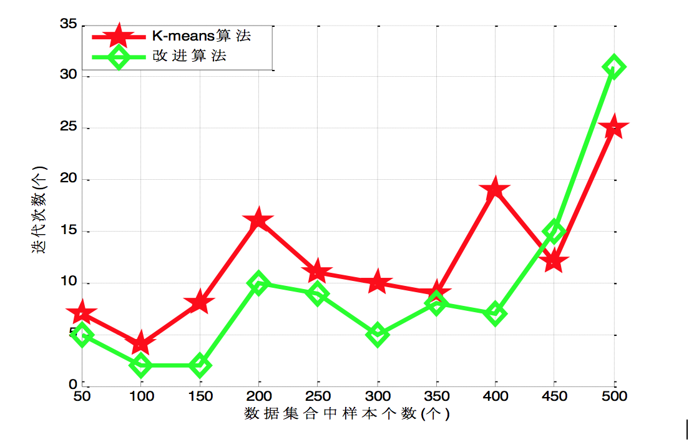 Clustering plays an increasingly important role in data mining and data analysis. We illustrated an improved clustering algorithm- K-means Algorithm, which can be accomplished much more easily and faster than many other similar algorithm.
Research on the query and update efficiency of B-Tree structure
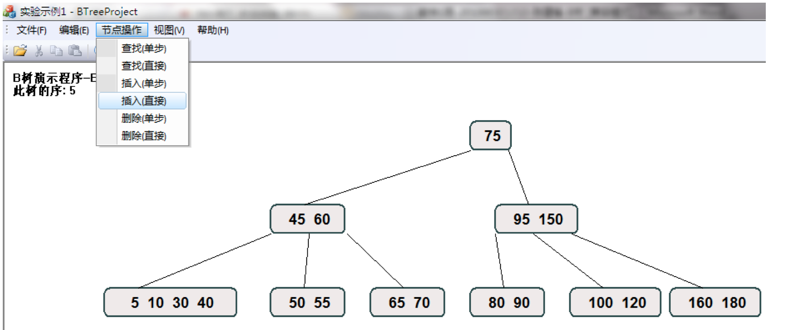 This is my course design of Data Structure class. To begin this course design, I first studied the structure of B-Tree and the common operation upon it. Then I wrote a B-Tree using C++, analyzed the spatial complexity and time complexity of the B-Tree and its operation. Finally, I also compared this data structure with other similar data structure-B* Tree, B+ Tree